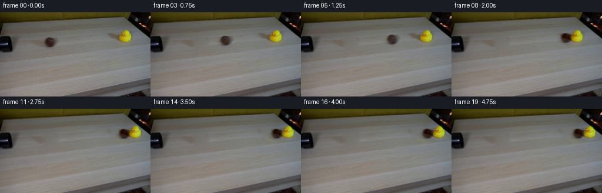
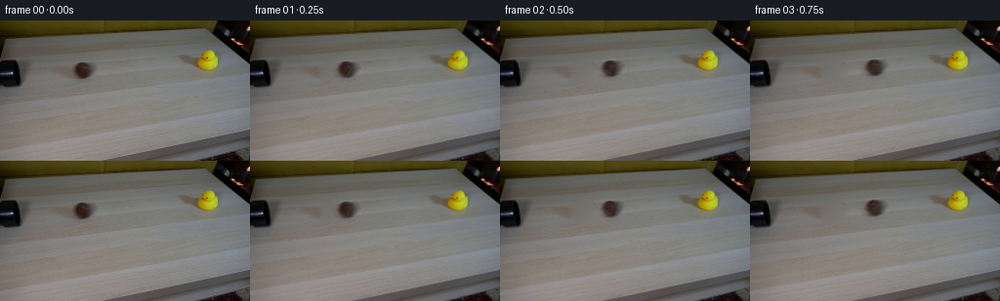

CODING AGENTS AS PIXEL WORLD MODELS
traex/GPT-6.1-Sol · 0007
点击播放 · 原生 RGB 像素
逐轮保存的候选
回放视频、检查图与代码变化。
每份候选均可单独播放。实际图片检查记录在下方工具轨迹中。
候选 01播放与检查图
点击播放 · 原生 RGB 像素


展开代码变化
--- 上一保存版本
+++ 本次保存版本
@@ -0,0 +1,113 @@
+from pathlib import Path
+import math
+import numpy as np
+from PIL import Image
+import cv2
+from scipy.ndimage import gaussian_filter
+import artifact_io
+
+ROOT = Path(__file__).resolve().parent
+H,W=144,256
+S=4
+
+def translated(layer, dx, dy, angle=0., pivot=(0.,0.)):
+ # Rotate around the contact point; positive angles tip toward the right.
+ a=math.radians(angle)
+ c,s=math.cos(a),math.sin(a)
+ px,py=pivot
+ M=np.array([[c,-s,(px-c*px+s*py+dx)*S],
+ [s,c,(py-s*px-c*py+dy)*S]],np.float32)
+ return cv2.warpAffine(layer,M,(W*S,H*S),flags=cv2.INTER_CUBIC,
+ borderMode=cv2.BORDER_CONSTANT,borderValue=0)
+
+def make_video():
+ original=np.array(Image.open(ROOT/'first_frame.png').convert('RGB'))
+ f=original.astype(np.float32)
+ yy,xx=np.mgrid[:H,:W].astype(np.float32)
+ # Erase just the moving objects and their original soft contact shadows.
+ ball_region=((xx-84.5)/15.7)**2+((yy-52)/12.0)**2<1
+ duck_region=np.zeros((H,W),np.uint8)
+ pts=np.array([[182,32],[202,32],[207,27],[219,27],[226,35],
+ [226,53],[216,57],[201,54],[188,44]],np.int32)
+ cv2.fillPoly(duck_region,[pts],1)
+ # Screen-space snapshots retain the actual photographed materials.
+ clean=cv2.inpaint(original,((ball_region|duck_region.astype(bool))*255).astype(np.uint8),5,cv2.INPAINT_TELEA).astype(np.float32)
+ # Smooth low-frequency inpainting artifacts without changing any of the room.
+ mask=(ball_region|duck_region.astype(bool))
+ for _ in range(150):
+ avg=(np.roll(clean,1,0)+np.roll(clean,-1,0)+np.roll(clean,1,1)+np.roll(clean,-1,1))*.25
+ clean[mask]=avg[mask]
+ # Subtle table grain, sampled solely from the adjacent portion of the image.
+ grain=f-gaussian_filter(f,(1.0,1.0,0))
+ shifted=np.roll(grain,37,axis=1)
+ inner=np.clip(cv2.distanceTransform(mask.astype(np.uint8),cv2.DIST_L2,5)/3,0,1)
+ clean+=shifted*inner[...,None]*.58
+ delta=f-clean
+ ball_delta=delta*ball_region[...,None]
+ duck_delta=delta*duck_region[...,None]
+
+ # Keep cast shadows on the tabletop while the duck itself rocks about its base.
+ silhouette=np.zeros((H,W),np.float32)
+ rows={30:(212,215),31:(210,217),32:(209,218),33:(208,219),34:(207,219),
+ 35:(207,220),36:(206,221),37:(205,221),38:(204,222),39:(203,222),
+ 40:(203,222),41:(202,222),42:(202,222),43:(202,222),44:(202,222),
+ 45:(202,222),46:(203,222),47:(204,221),48:(205,220),49:(207,219),50:(210,218)}
+ for y,(a,b) in rows.items(): silhouette[y,a:b+1]=1
+ silhouette=cv2.GaussianBlur(silhouette,(0,0),.55)
+ silhouette=np.clip(silhouette*1.2,0,1)
+ duck_object=duck_delta*silhouette[...,None]
+ duck_shadow=duck_delta-duck_object
+
+ # Rotate only felt texture and the seam; the light and round silhouette stay fixed.
+ disk=np.clip((1-((xx-84.0)/8.1)**2-((yy-51.4)/8.4)**2)*3,0,1)
+ detail=(f-gaussian_filter(f,(1.15,1.15,0)))*disk[...,None]
+ ball_smooth=ball_delta-detail
+ up=lambda a:cv2.resize(a,(W*S,H*S),interpolation=cv2.INTER_CUBIC)
+ bg=up(clean)
+ ball=up(ball_smooth)
+ texture=up(detail)
+ duck=up(duck_object)
+ shadow=up(duck_shadow)
+ frames=[original.copy()]
+
+ # The tabletop's vanishing direction turns a physically straight roll into
+ # a slightly rising line on the image. The ball is already emerging at t=0.
+ slope=-.067
+ contact_x=195.3
+ distance=contact_x-84
+ v0=58.
+ friction=3.0
+ tc=(v0-math.sqrt(v0*v0-2*friction*distance))/friction
+ vi=v0-friction*tc
+ # A heavier ball transfers momentum to the small, light rubber duck.
+ for i in range(1,20):
+ t=i/4.
+ if t<tc:
+ d=v0*t-.5*friction*t*t
+ duck_dx=0.; tilt=0.; duck_dy=0.
+ else:
+ tau=t-tc
+ # Rapid frictional damping of the light duck, slower ball deceleration.
+ d=distance+19.8*(1-math.exp(-1.95*tau))
+ duck_dx=21.8*(1-math.exp(-2.0*tau))
+ duck_dy=slope*duck_dx
+ # A visible impact rock, followed by settling upright.
+ tilt=22*math.exp(-2.4*tau)*math.sin(8.3*tau)
+ dx=d
+ dy=slope*d
+ roll=math.degrees(d/8.1)
+ # Fine irregular felt detail is convected across the sphere as it rolls.
+ spinning=translated(texture,0,0,roll,pivot=(84,51.4))
+ rotating_detail=spinning*up(disk)[...,None]
+ scene=bg.copy()
+ scene+=translated(shadow,duck_dx,duck_dy)
+ scene+=translated(duck,duck_dx,duck_dy,tilt,pivot=(214,49.3))
+ scene+=translated(ball+rotating_detail,dx,dy)
+ frame=cv2.resize(scene,(W,H),interpolation=cv2.INTER_AREA)
+ frames.append(np.uint8(np.clip(np.rint(frame),0,255)))
+ return np.stack(frames)
+
+if __name__=='__main__':
+ frames=make_video()
+ artifact_io.save(frames,ROOT)
+ print('Saved',frames.shape,frames.dtype)
候选 02播放与检查图
点击播放 · 原生 RGB 像素

展开代码变化
--- 上一保存版本
+++ 本次保存版本
@@ -55,18 +55,22 @@
for y,(a,b) in rows.items(): silhouette[y,a:b+1]=1
silhouette=cv2.GaussianBlur(silhouette,(0,0),.55)
silhouette=np.clip(silhouette*1.2,0,1)
- duck_object=duck_delta*silhouette[...,None]
- duck_shadow=duck_delta-duck_object
+ duck_object=duck_delta*silhouette[...,None]+clean*silhouette[...,None]
+ duck_shadow=duck_delta*(1-silhouette[...,None])
# Rotate only felt texture and the seam; the light and round silhouette stay fixed.
- disk=np.clip((1-((xx-84.0)/8.1)**2-((yy-51.4)/8.4)**2)*3,0,1)
- detail=(f-gaussian_filter(f,(1.15,1.15,0)))*disk[...,None]
- ball_smooth=ball_delta-detail
+ radius=np.sqrt(((xx-84.0)/8.1)**2+((yy-51.4)/8.4)**2)
+ disk=np.clip((1.13-radius)/.33,0,1)
+ detail=(f-gaussian_filter(f,(.65,.65,0)))*disk[...,None]*.45
+ ball_smooth=(ball_delta-detail)*disk[...,None]+clean*disk[...,None]
+ ball_shadow=ball_delta*(1-disk[...,None])
up=lambda a:cv2.resize(a,(W*S,H*S),interpolation=cv2.INTER_CUBIC)
- bg=up(clean)
ball=up(ball_smooth)
+ ball_alpha=up(disk)
+ ball_cast=up(ball_shadow)
texture=up(detail)
duck=up(duck_object)
+ duck_alpha=up(silhouette)
shadow=up(duck_shadow)
frames=[original.copy()]
@@ -98,12 +102,24 @@
roll=math.degrees(d/8.1)
# Fine irregular felt detail is convected across the sphere as it rolls.
spinning=translated(texture,0,0,roll,pivot=(84,51.4))
- rotating_detail=spinning*up(disk)[...,None]
- scene=bg.copy()
- scene+=translated(shadow,duck_dx,duck_dy)
- scene+=translated(duck,duck_dx,duck_dy,tilt,pivot=(214,49.3))
- scene+=translated(ball+rotating_detail,dx,dy)
- frame=cv2.resize(scene,(W,H),interpolation=cv2.INTER_AREA)
+ rotating_detail=spinning*ball_alpha[...,None]
+ # All nonmoving pixels come directly from the source, without resampling.
+ base=f.copy()
+ base[ball_region]=clean[ball_region]
+ if t>=tc:
+ base[duck_region.astype(bool)]=clean[duck_region.astype(bool)]
+ base_hi=up(base)
+ scene=base_hi.copy()
+ if t>=tc:
+ scene+=translated(shadow,duck_dx,duck_dy)
+ a=np.clip(translated(duck_alpha,duck_dx,duck_dy,tilt,pivot=(214,49.3)),0,1)
+ body=translated(duck,duck_dx,duck_dy,tilt,pivot=(214,49.3))
+ scene=scene*(1-a[...,None])+body
+ scene+=translated(ball_cast,dx,dy)
+ a=np.clip(translated(ball_alpha,dx,dy),0,1)
+ body=translated(ball+rotating_detail,dx,dy)
+ scene=scene*(1-a[...,None])+body
+ frame=base+cv2.resize(scene-base_hi,(W,H),interpolation=cv2.INTER_AREA)
frames.append(np.uint8(np.clip(np.rint(frame),0,255)))
return np.stack(frames)
候选 03播放与检查图
可观测工具轨迹
实际执行的命令与返回图片。
命令 1exit 0
/bin/bash -lc 'ls -la && cat prompt.txt && cat GENERATION_RULES.md'
命令 2exit 0
/bin/bash -lc "cat artifact_io.py && python - <<'PY'
from PIL import Image
import numpy as np
im=np.array(Image.open('first_frame.png'))
print(im.shape)
# sample grid of colors, every 8pixels
for y in range(4,144,8):
print(y, ' '.join('%02x%02x%02x'%tuple(im[y,x,:3]) for x in range(4,256,8)))
PY"命令 3exit 0
/bin/bash -lc "python - <<'PY'
from PIL import Image
import numpy as np
from scipy.ndimage import label
im=np.asarray(Image.open('first_frame.png')).astype(float)
r,g,b=im.transpose(2,0,1)
# categories excluding very top
masks={'yellow':(r>b*1.7)&(g>b*1.65)&(g>60)&(r>60), 'brown':(r>g*1.12)&(g>b*1.12)&(r<125)&(np.indices(r.shape)[0]>20)&(np.indices(r.shape)[0]<61), 'dark':np.max(im,2)<48}
for name,mask in masks.items():
lab,n=label(mask)
print(name)
for i in range(1,n+1):
yy,xx=np.where(lab==i)
if len(xx)>4: print(len(xx),(xx.min(),yy.min(),xx.max(),yy.max()),'center',xx.mean(),yy.mean())
# numerical categorized location map
for y in range(0,76,2):
line=''
for x in range(0,256,2):
rr,gg,bb=im[y,x];
if masks['yellow'][y,x]: c='Y'
elif masks['brown'][y,x]:c='B'
elif max(rr,gg,bb)<30:c='#'
elif max(rr,gg,bb)<50:c='d'
elif bb>rr*1.13:c='c'
else:c='.'
line+=c
print('%02d '%y+line)
PY"命令 4exit 0
/bin/bash -lc "python - <<'PY'
from PIL import Image
import numpy as np
im=np.asarray(Image.open('first_frame.png')).astype(float)
c=' .,:;irsXA253hMHGS#9B&@'
# intensity map at 1 pixel left region, duck
for box in [(0,30,108,70),(189,24,228,59)]:
x0,y0,x1,y1=box
print('REGION',box)
for y in range(y0,y1):
print('%2d '%y+''.join(c[int(np.mean(im[y,x])/256*len(c))] for x in range(x0,x1)))
print('selected full color values horizontal')
for y in [38,40,42,44,46,48,50,52,54,56,58,60,62]:
print(y,' '.join('%d:%d,%d,%d'%(x,*im[y,x]) for x in range(0,100,4)))
PY"命令 5exit 0
/bin/bash -lc "python - <<'PY'
import numpy as np
from PIL import Image
im=np.array(Image.open('first_frame.png'))
for box in [(68,39,99,64),(197,27,226,53)]:
x0,y0,x1,y1=box
print('REGION',box)
for y in range(y0,y1):
s=''
for x in range(x0,x1):
r,g,b=map(int,im[y,x]);v=(r+g+b)/3
if r-b>32 and g-b>28: c='Y' if v>70 else 'y'
elif r-g>13 and r-b>20:c='b'
elif v<35:c='#'
elif v<45:c='d'
elif v<60:c='o'
elif v<75:c='s'
elif v<90:c='+'
elif v<105:c='.'
elif v<120:c=':'
elif v<135:c=';'
else:c='"'!'"'
s+=c
print('%2d '%y+s)
print('\\nEvery pixel RGB:')
for y in range(y0+4,y1-4):
print(y,' '.join('%02x%02x%02x'%tuple(im[y,x]) for x in range(x0+5,x1-3)))
PY"命令 6exit 0
/bin/bash -lc "python - <<'PY'
import importlib.util
for p in ['cv2','scipy','numpy','PIL']:
print(p, bool(importlib.util.find_spec(p)))
import numpy as np
from PIL import Image
im=np.array(Image.open('first_frame.png'))
for y in range(29,54):
print('%2d '%y+''.join('Y' if (int(im[y,x,0])-int(im[y,x,2])>35 and int(im[y,x,1])-int(im[y,x,2])>28) else ('b' if int(im[y,x,0])-int(im[y,x,2])>30 else '.') for x in range(187,230)))
PY"命令 7exit 0
/bin/bash -lc "python - <<'PY'
import numpy as np
from PIL import Image
im=np.array(Image.open('first_frame.png'))
for y in [28,32,36,40,44,48,52,56,60,64]:
print(y, [(x, tuple(im[y,x])) for x in [176,180,184,188,192,196,200,204,208,212,216,220,224,228,232,236,240,244]])
PY"命令 8exit 0
/bin/bash -lc "python - <<'PY'
from PIL import Image
import numpy as np
im=np.array(Image.open('first_frame.png'))
# exact ball horizontal luminance and brown contrast
for y in range(41,63):
print(y,' '.join('%3d'%int(np.mean(im[y,x])) for x in range(71,99)))
PY"命令 9exit 0
/bin/bash -lc "cat > generate.py <<'PY'
from pathlib import Path
import math
import numpy as np
from PIL import Image
import cv2
from scipy.ndimage import gaussian_filter
import artifact_io
ROOT = Path(__file__).resolve().parent
H,W=144,256
S=4
def translated(layer, dx, dy, angle=0., pivot=(0.,0.)):
# Rotate around the contact point; positive angles tip toward the right.
a=math.radians(angle)
c,s=math.cos(a),math.sin(a)
px,py=pivot
M=np.array([[c,-s,(px-c*px+s*py+dx)*S],
[s,c,(py-s*px-c*py+dy)*S]],np.float32)
return cv2.warpAffine(layer,M,(W*S,H*S),flags=cv2.INTER_CUBIC,
borderMode=cv2.BORDER_CONSTANT,borderValue=0)
def make_video():
original=np.array(Image.open(ROOT/'first_frame.png').convert('RGB'))
f=original.astype(np.float32)
yy,xx=np.mgrid[:H,:W].astype(np.float32)
# Erase just the moving objects and their original soft contact shadows.
ball_region=((xx-84.5)/15.7)**2+((yy-52)/12.0)**2<1
duck_region=np.zeros((H,W),np.uint8)
pts=np.array([[182,32],[202,32],[207,27],[219,27],[226,35],
[226,53],[216,57],[201,54],[188,44]],np.int32)
cv2.fillPoly(duck_region,[pts],1)
# Screen-space snapshots retain the actual photographed materials.
clean=cv2.inpaint(original,((ball_region|duck_region.astype(bool))*255).astype(np.uint8),5,cv2.INPAINT_TELEA).astype(np.float32)
# Smooth low-frequency inpainting artifacts without changing any of the room.
mask=(ball_region|duck_region.astype(bool))
for _ in range(150):
avg=(np.roll(clean,1,0)+np.roll(clean,-1,0)+np.roll(clean,1,1)+np.roll(clean,-1,1))*.25
clean[mask]=avg[mask]
# Subtle table grain, sampled solely from the adjacent portion of the image.
grain=f-gaussian_filter(f,(1.0,1.0,0))
shifted=np.roll(grain,37,axis=1)
inner=np.clip(cv2.distanceTransform(mask.astype(np.uint8),cv2.DIST_L2,5)/3,0,1)
clean+=shifted*inner[...,None]*.58
delta=f-clean
ball_delta=delta*ball_region[...,None]
duck_delta=delta*duck_region[...,None]
# Keep cast shadows on the tabletop while the duck itself rocks about its base.
silhouette=np.zeros((H,W),np.float32)
rows={30:(212,215),31:(210,217),32:(209,218),33:(208,219),34:(207,219),
35:(207,220),36:(206,221),37:(205,221),38:(204,222),39:(203,222),
40:(203,222),41:(202,222),42:(202,222),43:(202,222),44:(202,222),
45:(202,222),46:(203,222),47:(204,221),48:(205,220),49:(207,219),50:(210,218)}
for y,(a,b) in rows.items(): silhouette[y,a:b+1]=1
silhouette=cv2.GaussianBlur(silhouette,(0,0),.55)
silhouette=np.clip(silhouette*1.2,0,1)
duck_object=duck_delta*silhouette[...,None]
duck_shadow=duck_delta-duck_object
# Rotate only felt texture and the seam; the light and round silhouette stay fixed.
disk=np.clip((1-((xx-84.0)/8.1)**2-((yy-51.4)/8.4)**2)*3,0,1)
detail=(f-gaussian_filter(f,(1.15,1.15,0)))*disk[...,None]
ball_smooth=ball_delta-detail
up=lambda a:cv2.resize(a,(W*S,H*S),interpolation=cv2.INTER_CUBIC)
bg=up(clean)
ball=up(ball_smooth)
texture=up(detail)
duck=up(duck_object)
shadow=up(duck_shadow)
frames=[original.copy()]
# The tabletop's vanishing direction turns a physically straight roll into
# a slightly rising line on the image. The ball is already emerging at t=0.
slope=-.067
contact_x=195.3
distance=contact_x-84
v0=58.
friction=3.0
tc=(v0-math.sqrt(v0*v0-2*friction*distance))/friction
vi=v0-friction*tc
# A heavier ball transfers momentum to the small, light rubber duck.
for i in range(1,20):
t=i/4.
if t<tc:
d=v0*t-.5*friction*t*t
duck_dx=0.; tilt=0.; duck_dy=0.
else:
tau=t-tc
# Rapid frictional damping of the light duck, slower ball deceleration.
d=distance+19.8*(1-math.exp(-1.95*tau))
duck_dx=21.8*(1-math.exp(-2.0*tau))
duck_dy=slope*duck_dx
# A visible impact rock, followed by settling upright.
tilt=22*math.exp(-2.4*tau)*math.sin(8.3*tau)
dx=d
dy=slope*d
roll=math.degrees(d/8.1)
# Fine irregular felt detail is convected across the sphere as it rolls.
spinning=translated(texture,0,0,roll,pivot=(84,51.4))
rotating_detail=spinning*up(disk)[...,None]
scene=bg.copy()
scene+=translated(shadow,duck_dx,duck_dy)
scene+=translated(duck,duck_dx,duck_dy,tilt,pivot=(214,49.3))
scene+=translated(ball+rotating_detail,dx,dy)
frame=cv2.resize(scene,(W,H),interpolation=cv2.INTER_AREA)
frames.append(np.uint8(np.clip(np.rint(frame),0,255)))
return np.stack(frames)
if __name__=='__main__':
frames=make_video()
artifact_io.save(frames,ROOT)
print('Saved',frames.shape,frames.dtype)
PY
python generate.py"命令 10exit 0
/bin/bash -lc "python - <<'PY'
import numpy as np
from PIL import Image
from scipy.ndimage import label
for i in [0,1,4,7,8,9,10,12,15,19]:
im=np.asarray(Image.open('frames/%02d.png'%i)).astype(float)
r,g,b=im.transpose(2,0,1)
yy,xx=np.mgrid[:144,:256]
yel=(r-b>45)&(g-b>38)&(yy>20)&(yy<65)
lab,n=label(yel)
comps=[]
for j in range(1,n+1):
y,x=np.where(lab==j)
if len(x)>40:comps.append((len(x),(x.min(),y.min(),x.max(),y.max())))
brown=(r-g>13)&(r-b>20)&(yy>30)&(yy<64)&(xx>30)&(xx<223)
lab,n=label(brown)
bc=[]
for j in range(1,n+1):
y,x=np.where(lab==j)
if len(x)>40:bc.append((len(x),(x.min(),y.min(),x.max(),y.max())))
print(i,'duck',comps,'ball',bc)
# Categorized map after collision
for i in [1,8,9,12,19]:
im=np.asarray(Image.open('frames/%02d.png'%i)).astype(float)
print('\\nFRAME',i)
for y in range(26,61):
out=''
for x in range(176,253):
r,g,b=im[y,x];v=(r+g+b)/3
if r-b>35 and g-b>28:c='Y'
elif r-g>13 and r-b>20:c='b'
elif v<35:c='#'
elif v<45:c='d'
elif v<60:c='o'
elif v<75:c='s'
elif v<90:c='+'
elif v<105:c='.'
elif v<120:c=':'
elif v<135:c=';'
else:c='"'!'"'
out+=c
print('%2d '%y+out)
PY"命令 11exit 0
/bin/bash -lc "python generate.py && python - <<'PY'
import numpy as np
from PIL import Image
from scipy.ndimage import label
first=np.asarray(Image.open('first_frame.png'))
for i in [0,1,4,7,8,9,10,12,19]:
im=np.asarray(Image.open('frames/%02d.png'%i))
r,g,b=im.astype(float).transpose(2,0,1);yy,xx=np.mgrid[:144,:256]
m=(r-g>13)&(r-b>20)&(yy>32)&(yy<62)&(xx>30)&(xx<204)
lab,n=label(m);c=[]
for j in range(1,n+1):
y,x=np.where(lab==j)
if len(x)>25:c.append((len(x),(x.min(),y.min(),x.max(),y.max())))
diff=np.any(im"'!=first,axis=2)
print(i,c, '"'changed',diff.sum(),'outside motion',diff[70:].sum(), 'minvalue',im[33:62,35:224].min())
print('identical zero:',np.array_equal(first,np.asarray(Image.open('frames/00.png'))))
PY"命令 12exit 0
/bin/bash -lc "python - <<'PY'
import numpy as np
from PIL import Image
p=np.load('pixels.npz')['pixels']
assert p.shape==(144,256,20)
im=np.asarray(Image.open('first_frame.png').convert('RGB'),dtype=np.uint32)
assert np.array_equal(p[:,:,0],(im[:,:,0]<<16)|(im[:,:,1]<<8)|im[:,:,2])
print('Validated: 20 frames, 256x144 RGB, exact source frame 00.')
PY
ls -lh pixels.npz index.html generate.py"保存候选 3 份；完成命令 12 次；可验证图片返回 0 张。原始 API 响应与完整日志保留在本地。